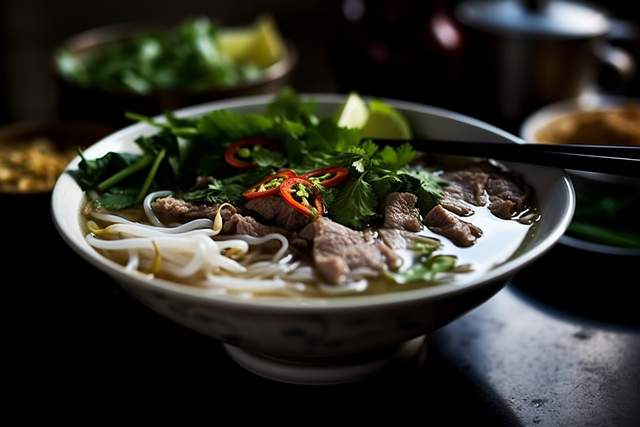

All information on this page is taken from https://www.recipetineats.com/vietnamese-pho-recipe/
If you’re wondering “What is Pho?” then you’re probably also wondering “Why is she so bonkers over it???” I don’t blame you. It looks like a relatively harmless bowl of beef noodle soup. That is, until you take your first slurp. The Pho soup broth is everything. It’s light yet full of flavour, deceptively beefy, savoury, complex, has the tiniest hint of richness and is filled with beautiful spices like cinnamon. It is, without question, one of The Best Soups in the whole world!
Pho is the first thing you seek upon landing in Vietnam, always choosing vendors crowded with locals rather than tourists!While you’ll need to man handle a considerable mound of bones and beef, I think you might be surprised how straightforward it actually is to make pho. It’s more time than anything – and a very big pot!
REMOVE IMPURITIES:
BROTH:
ASSEMBLE:
Recipe Notes
Optional (the other Toppings are essential, at least 1 herb)